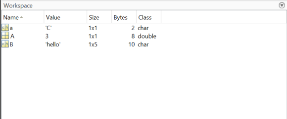

Creating Variables
Last updated on 2025-02-06 | Edit this page
Overview
Questions
- How can I store and work on data?
- What does MATLAB assume about data?
- How can I handle data of 2, 3 or more dimensions?
Objectives
- Lean about what a variable is and how MATLAB handles variables
- Understand how to create variables of various dimensions
- Briefly review data types and why they aren’t important in MATLAB
Introduction
When programming there are many occasions where you will want to be able to access some data. For example, you may want to load in a data set from online, load data from an sensor in the field or store the results of a calculation. How we store and refer to data in programming is through the use of variables.
Variables
A variable in MATLAB is made of 2 parts, a name and a value. The name is what we use to refer to a variable and the value is the number, word, or item that is stored in it.
The value of a variable in MATLAB can be many things! Some examples are
| Variable Type | Example Value |
|---|---|
| Integer | 1, 2, 3 |
| Double | 1.23, 4.56 |
| Character | ‘A’, ‘b’, ‘c’ |
| String | “hello” |
| Matrix | [1 2 3; 4 5 6] |
| Logical |
true, false
|
As mentioned in the previous episode MATLAB has a section called the workspace, this is where you can view what Variables are in-memory. The simplest way of creating a variable is with the ‘=’ symbol, for example:
my_variable = 5will create a variable with the name my_variable and a
value of 5.
MATLAB (like most programming languages), holds variables in-memory. This means they are stored on your computers RAM rather than your hard drive. This allows for fast access and processing, however RAM is wiped when your computer turns off or an application quits so your workspace will be deleted when you close MATLAB or shut off your computer.
Challenge 1: Creating Variables
Create a variable called A with a value of 3
Create a variable called B with a value of ‘hello’
Create a variable called a with the value of ‘C’:
Create a variable called C with the value of the variable in A
Customise your workspace and add the extra columns Size, Bytes and Class, this can be done by right clicking the top of the workspace
A = 3B = 'hello'a = 'C'C = A- Your workspace should look like this! We suggest customising the workspace columns just as an example of what is possible. 
You may notice in the previous solution there is a type called a ‘double’. MATLAB is whats known as a dynamically typed language, which is also called “duck typing”. This is based off the saying ‘if it walks like a duck and quacks like a duck it’s probably a duck’. In programming terms this means that when you make a variable MATLAB has a look at it and assumes what type it is based on how it looks. Other languages like C++ require you to explicitly tell the program what type every variable is.
For you as a user, this means that you don’t have to really know or pay attention to data types! However it is worth knowing they exist, as if you get more advanced you may want to manipulate them to optimise your algorithms or for some other advanced use cases.
Variable Names
There are several conventions for naming variables, such as camel
case, where each word is joined without a space and each new word starts
with a capital letter. For example camelCase or
analysisResult
Snake case is another common standard, where each word is lower case
and separated with underscores, for example snake_case or
analysis_results.
Both standards will work well, if you’re working with existing code or on an existing project it is normally best to stick with the convention already in use!
Useful Variable Names
In this lesson we are using variable names without any meaning such as A or B. When programming code it is good practice to use meaningful unique names for your variables.
Dimensions
A lot of data analysis, processing and workflows wont be with single numbers but with large multidimensional datasets. Working with image/video, time series, tables or many other data sources can quickly make your incoming data large in size. Variables in MATLAB can and are very good at storing and working with multidimensional data.
Penny command
Use the penny command in the command window. this
command will create an interactive 3D plot of a US penny mold.
- How many new variables are there in your work space?
- Look at the size column in your workspace, how many dimensions are there in each variable?
If you double click a variable name in the workspace you can explore it in a spreadsheet style interface called the variable editor.
There should be 2 new variables in your workspace, P and
D. Both have a size of 128x128, this means they have 128
rows and 128 columns and are therefore 2-dimensional matrices.
Dimension Order
In MATLAB learning the order in which dimensions appear is very helpful.
The first dimension is always rows and the second columns. So if you saw a variable with size 5x10, you could picture it looking like a spreadsheet with 5 rows and 10 columns. (This is the opposite if what you would expect from X, Y notation!)
In MATLAB there are names given to different variable shapes:
| Dimensions | Name | Description |
|---|---|---|
| 0D | Scalar | A single value like those created in Challenge #1 |
| 1D | Vector | A single row or column |
| 2D | Matrix | Rows and columns, like an Excel spreedsheet or Google sheet |
| 3D+ | Array | Rows, columns and pages |

Creating Multidimensional Variables
In general when creating multidimensional variables you
- use square brackets
[] - separate columns with a space
- separate rows with a semi-colon
;
Here are some examples of creating vector variables:
Challenge
- Create a row vector called G with values 2, 4 & 6
- Create a column vector called H with values 1, 3 & 5
- Create a 2x2 matrix called I with values 10, 20, 30 & 40.
G = [2 4 6]H = [1;3;5]I = [10 20; 30 40]
Cleaning the Workspace
Finally we will look at how we can remove variables we aren’t using! We do this because as you explore data and test your analysis over time you will get variables you aren’t building cluttering your workspace, this can lead to you either accidently overwriting data or using variables you weren’t intending to.
Clearing all variables
Simply putting clear into your command window will clear
all variables
Clear single variable
clear A will clear just the variable called
A
Clear command window
After working a while you will have a long history of commands in
your command window, you can clear this up by running the
clc (command line clear) command.
Callout
You can access commands you have previously typed in the command window by pressing the up arrow on your keyboard. If you type part of a command and press the up arrow, only commands that match the partially completed command will be shown.
Indexing
Colon Notation
MATLAB provides what is called the colon notation which allows us to specify a range of values.
OUTPUT
a =
1 2 3 4 5 6 7 8 9 10a should be 1x10 size, meaning 1 row 10 columns
Steps
You can also specify a step, so the colon notation only makes every nth number
OUTPUT
b =
1 3 5 7 9 11 13 15 17 19Steps can also be non-integer values
OUTPUT
c =
1.0000 1.1000 1.2000 1.3000 1.4000 1.5000 1.6000 1.7000 1.8000 1.9000 2.0000Steps and range end values
When you specify a step that is grater than 1, the last value won’t
necessarily be the range end value! Instead it will be the closest value
that doesn’t go over the end value and this is why the last value in
b is 19 and not 20!
Functions
We can also use functions to create arrays (vectors or matricies). Functions are premade code blocks that serve a commonly wanted functionality.
First we will use one called linspace, which stands for
linearly spaced. It creates a vector of linearly spaced numbers, you
specify the start, end and how many numbers.
OUTPUT
d =
1.0000 3.2500 5.5000 7.7500 10.0000
Some other useful functions are:
MATLAB
% Rand creates an n-dimensional array of random numberes between 0 and 1.
e = rand(5,1)
% Create 2D matrix of zeros.
f = zeros(2,2)
% Create a 2D matrix of NaN values - NaN means 'Not a Number'
% This is a special and useful term for when a value can't be represented by a number.
g = nan(5,5)Callout
Here are some common scenarios where NaN may be used:
- Mathematical operations that cant be computed (division by 0, root of negative numbers)
- No data were recorded, for example an in-field sensor may have lost power
Challenge
- Create a vector with numbers 12 to 100 containing every 4th number
(steps of 4), called
h - Create a matrix of random numbers with 4 rows and 5 columns, call it
ii
-
h = 12:4:100orh = linspace(12,100,23) ii = rand(4,5)
i
i in MATLAB can be used as a variable, but it also has a
special meaning as the square root of -1! MATLAB treats j
the same way. To avoid confusion it’s often better to use
ii and jj instead.
Key Points
- Variables are the main way we access and use data in MATLAB
- Variables can store many types of data including multidimensional data
- Creating multidimensional arrays is done with square brackets